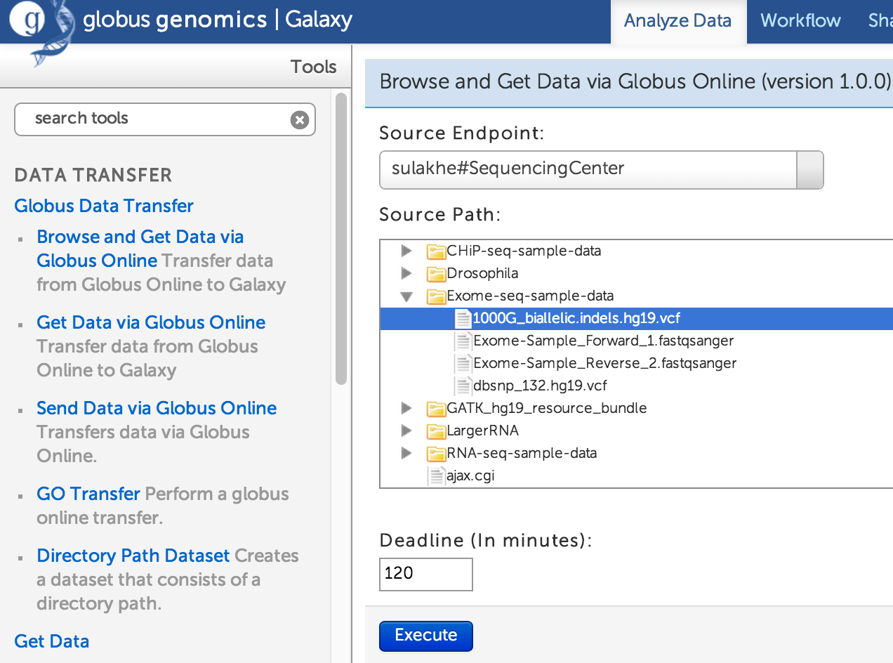

Practical Guide¶
Exome Example¶
1. Sample datasets
- After logging into an instance, go to Globus Data Transfer -> Browse and Get Data via Globus Online under the tools panel.
- Search and select “sulakhe#SequencingCenter”
- When prompted, provide username: genomics and password: globus
- For Exome-seq pipeline, click Exome-seq-sample-data and transfer the Exome-Sample-Forward and Exome-Sample-Reverse sample files one-by-one. (we are adding multi-file transfers soon to this interface).
- Note that you don’t have to transfer the dbsnp and 1000G files as they are on the instance already.

2. Getting the dbsnp and 1000G-indels files from Shared library
- Go to Shared Data -> Data Libraries from the top menu.
- Select the Reference Data Library and you should see the two files.
- Select them (Check box) and import to current history by clicking Go
3. Running the Exome analysis
- To get the sample exome workflow, Go to Shared Data -> Published Workflows and you should see Illumina Complete Exome Analysis Pipeline.
- Import the workflow by clicking Import Workflow on the top right.
- To run the workflow: Go to “Workflow” on top menu where you should see your imported workflow.
- click on the workflow and Run.
- By this time, if you already have the 4 input files required in the right-hand history panel, you should be able to select them in the Run interface
- Make sure you select the appropriate Forward and Reverse fastq files for BWA and then appropriate dbsnp and 1000G indels files for other tools.
- For Step 2: Add or Replace Groups, you can provide: ID = Test, SM = Test, LB = Test, PL = Illumina, PU= 100.
- And click the Run Workflow button at the bottom screen.
RNA-seq Example¶
1. Sample datasets
- After logging into an instance, go to Globus Data Transfer -> Browse and Get Data via Globus Online under the tools panel.
- Search and select sulakhe#SequencingCenter
- When prompted, provide username: genomics and password: globus
- For Exome-seq pipeline, click RNA-seq-sample-data and transfer the files one-by-one. (we are adding multi-file transfers soon to this interface).
2. Running the RNAseq analysis
- Either import the RNAseq workflow from the front page or go to Shared Data -> Published Workflows.
- The workflow might already have pre-defined globus transfers to pull the data from the SequencingCenter endpoint.
- Run the workflow and make sure all the required parameters are filled or selected appropriately.
{kind=link}
{kind=link}
{kind=link}
{kind=link}
{kind=link}
{kind=link}
{kind=link}
{kind=link}
{kind=link}